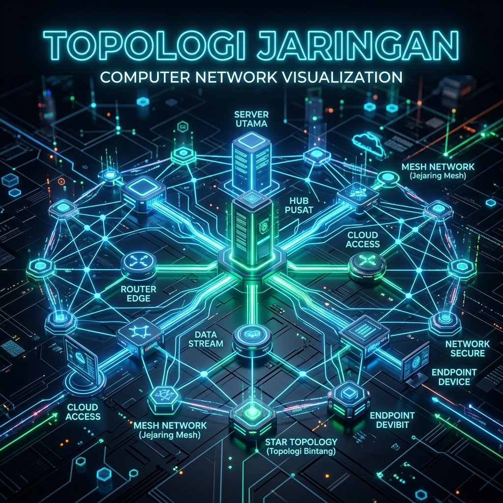
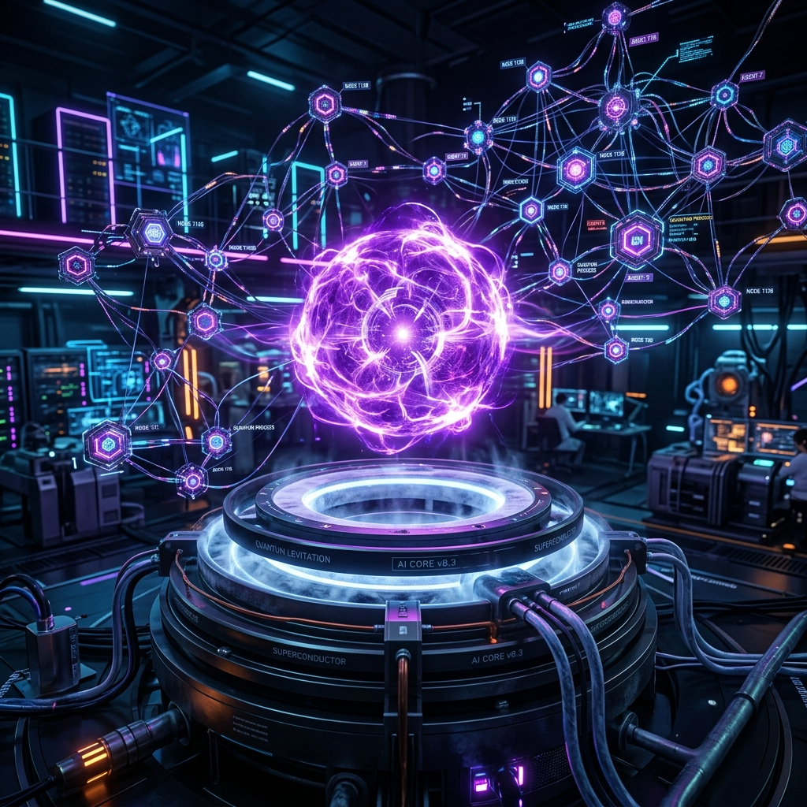

Informatika
Eksplorasi 7 materi utama informatika: Topologi, Angka Biner, Kriptografi, HTML, CSS, Antigravity, dan Vibe Coding. Dilengkapi demonstrasi interaktif untuk pengujian langsung.
Topologi & Arsitektur Jaringan

Topologi Jaringan adalah cabang ilmu jaringan komputer dan informatika yang mempelajari bentuk, struktur, serta tata letak hubungan fisik maupun logis antarkomputer dan perangkat komunikasi. Secara etimologi, istilah ini berasal dari bahasa Yunani "topos" (tempat) dan "logos" (ilmu). Perancangan topologi yang tepat menentukan bagaimana data dikirimkan melalui node, memilih rute transmisi paling efisien, serta meminimalisir risiko kegagalan koneksi dalam suatu sistem jaringan.
Seiring bertumbuhnya kebutuhan data internet dan komputasi awan, topologi jaringan kini berkembang pesat dengan integrasi Software-Defined Networking (SDN) dan infrastruktur Cloud Data Center modern. Berbagai tipe topologi seperti Star, Mesh, Ring, Bus, dan Tree diterapkan secara fleksibel sesuai dengan kebutuhan skala industri. Penggunaan perangkat keras pintar seperti router gigabit, switch terkelola, dan kabel serat optik berkecepatan tinggi memungkinkan miliaran impuls data terkirim dengan latensi sangat rendah dan keandalan tinggi.
Komponen & Tipe Utama Topologi Jaringan:
- Topologi Star & Mesh: Arsitektur paling populer dengan node terpusat atau koneksi redundant untuk toleransi kesalahan tinggi.
- Simpul & Media Transmisi (Node & Links): Perangkat komputer, router, switch, serta media kabel fiber optik atau nirkabel.
- SDN (Software-Defined Networking): Arsitektur cerdas yang memisahkan kendali jaringan dari perangkat fisik untuk efisiensi komputasi.
Peran topologi jaringan sangat vital dalam mendukung ekosistem digital modern, seperti infrastruktur internet global, jaringan pusat data perbankan, simulasi IoT (Internet of Things), hingga server game multipemain berkecepatan tinggi. Algoritma routing komputasi dapat memproses struktur topologi untuk mengatur beban transmisi secara seimbang (load balancing), mengamankan lalu lintas data terenkripsi, serta secara otomatis mengalihkan rute koneksi jika terdapat kabel atau node jaringan yang terputus.
Penerapan Budaya Humanis Tzu Chi: Di Sekolah Cinta Kasih Tzu Chi, pemahaman materi topologi jaringan bukan sekadar ilmu akademis komputasi, melainkan wujud nyata mempererat tali kasih dan komunikasi antar sesama. Arsitektur jaringan nirkabel dan mesh yang tangguh memungkinkan relawan kemanusiaan Tzu Chi membangun posko komunikasi darurat secara cepat saat terjadi bencana alam, sehingga koordinasi bantuan, pertolongan medis, serta penyebaran kabar keselamatan dapat tersalurkan tanpa hambatan demi menyelamatkan banyak jiwa.
Kesimpulan Materi 1: Topologi Jaringan
Topologi Jaringan mengintegrasikan konsep arsitektur komputer dan sistem komunikasi digital untuk menghubungkan perangkat secara efisien, tangguh, dan aman. Pemanfaatan rancangan topologi yang optimal tidak hanya memajukan teknologi internet dan cloud modern, namun juga menjadi sarana vital konektivitas kemanusiaan dalam situasi darurat bencana.
Implementasi Nyata:
- Infrastruktur Internet & Cloud: Menghubungkan ribuan server pusat data global dengan topologi mesh dan SDN.
- Smart City & Jaringan IoT: Menghubungkan jutaan sensor lalu lintas dan kamera pengawas dalam topologi terdistribusi.
- Komunikasi Darurat Tzu Chi: Membangun jaringan komunikasi mesh nirkabel tangguh untuk posko bantuan bencana.
Sistem Angka Biner (Binary System)
Sistem Angka Biner (sistem bilangan berbasis 2) merupakan fondasi paling mendasar dari seluruh arsitektur komputer modern. Tidak seperti manusia yang menggunakan sistem desimal berbasis 10 (angka 0 hingga 9), mesin digital hanya mengenal dua keadaan logis, yaitu digit 0 (OFF / Low Voltage) dan digit 1 (ON / High Voltage). Dua simbol sederhana ini melambangkan keadaan fisik transistor di dalam sirkuit terpadu mikroprosesor.
Di tingkat perangkat keras (hardware), miliaran transistor yang terdapat pada CPU (*Central Processing Unit*) diatur menggunakan gerbang logika mikro (*logic gates*) seperti AND, OR, NOT, NAND, dan XOR. Penggabungan sirkuit gerbang logika ini memungkinkan komputer melakukan operasi aritmatika kompleks, eksekusi kode instruksi, hingga pemrosesan grafik tingkat tinggi secara sangat cepat dengan frekuensi clock hingga miliaran siklus per detik (GHz).
Konsep Bit & Byte
Satu unit biner tunggal disebut Bit. Kombinasi 8 Bit membentuk 1 Byte.
- 1 Bit = 0 atau 1
- 1 Byte = 8 Bit (misal: 01000001 = 'A')
Gerbang Logika (Logic Gates)
Prosesor mengolah angka biner melalui gerbang logika mikro pada transistor:
Dalam hierarki penyimpanan data, satu digit biner tunggal disebut sebagai Bit (*Binary Digit*). Pengelompokan 8 Bit membentuk 1 Byte, yang menjadi standar pengkodean satu karakter teks berdasarkan skema ASCII (*American Standard Code for Information Interchange*) atau unicode UTF-8. Seluruh bentuk informasi digital—mulai dari dokumen teks, foto digital JPEG, rekaman suara MP3, hingga video streaming 4K—pada dasarnya dikonversi dan disimpan di dalam memori komputer sebagai deret angka biner yang sangat panjang.
Memahami konsep angka biner memberikan wawasan mendalam mengenai cara kerja memori (*RAM*), pengalamatan IP (*IP Address IPv4/IPv6*), pemrosesan sinyal digital, hingga pengkodean warna piksel RGB (Red, Green, Blue). Penguasaan matematika biner juga membantu para pemrogram memahami efisiensi memori dan optimasi struktur data pada tingkat sistem komputasi terendah.
Kesimpulan Materi 2: Sistem Angka Biner
Sistem Angka Biner adalah bahasa universal mesin komputer yang mengubah aliran listrik 0 (OFF) dan 1 (ON) menjadi data digital multi-dimensi. Logika biner merupakan DNA utama yang menggerakkan seluruh perangkat lunak, sistem operasi, dan jaringan internet global.
Demonstrasi Interaktif: Converter Desimal ke Biner & Teks
Kriptografi & Keamanan Informasi
Kriptografi adalah cabang ilmu matematika dan informatika yang berfokus pada teknik amankan data, komunikasi, dan transaksi digital agar tidak dapat dibaca atau dimanipulasi oleh pihak yang tidak berhak. Kata kriptografi berasal dari bahasa Yunani "kryptos" (tersembunyi) dan "graphien" (menulis). Praktik menyembunyikan pesan ini telah digunakan sejak zaman kuno, salah satunya melalui metode pergeseran abjad sederhana yang dikenal sebagai Caesar Cipher pada masa Romawi Kuno.
Pada sistem keamanan modern, kriptografi dibagi menjadi dua kategori utama: Kriptografi Kunci Simetris (*Symmetric Cryptography*) dan Kriptografi Kunci Asimetris (*Asymmetric Cryptography*). Kriptografi simetris (seperti AES-256) menggunakan satu kunci rahasia yang sama untuk proses enkripsi dan dekripsi. Sementara itu, kriptografi asimetris (seperti RSA dan ECC) menggunakan sepasang kunci terpisah, yaitu Kunci Publik (*Public Key*) untuk mengunci pesan dan Kunci Privat (*Private Key*) untuk membuka pesan.
Enkripsi
Mengubah teks biasa (Plaintext) menjadi pesan teracak (Ciphertext).
Dekripsi
Mengembalikan Ciphertext teracak menjadi Plaintext dengan Kunci Rahasia.
Hashing (SHA-256)
Fungsi 1 arah untuk verifikasi integritas data tanpa menampilkan password asli.
Selain enkripsi, komponen vital kriptografi lainnya adalah Fungsi Hash Kriptografi (*Cryptographic Hash Function*) seperti SHA-256 dan MD5. Fungsi hash mengonversi data masukan berapa pun ukurannya menjadi nilai sidik jari digital (*hash digest*) berukuran tetap yang bersifat satu arah (*one-way*). Teknologi hash digunakan secara luas untuk memverifikasi integritas unduhan file, mengamankan kata sandi pengguna di database, serta mendasari rantai blok (*blockchain*) pada teknologi keuangan terdesentralisasi.
Di era konektivitas internet saat ini, kriptografi bertindak sebagai benteng pertahanan utama keamanan siber (*cybersecurity*). Setiap kali kita mengakses situs web berprotokol HTTPS, melakukan transaksi *internet banking*, atau mengirim pesan terenkripsi *end-to-end* di aplikasi komunikasi, algoritma kriptografi bekerja secara otomatis di balik layar untuk melindungi privasi dan identitas digital pengguna dari ancaman peretasan.
Kesimpulan Materi 3: Kriptografi
Kriptografi merupakan pilar utama keamanan digital yang melindungi kerahasiaan (*confidentiality*), integritas (*integrity*), dan keabsahan (*authenticity*) data di era cyber. Algoritma enkripsi dan hashing menjamin transaksi online serta privasi informasi tetap aman dan terpercaya.
🔑 Simulator Enkripsi Sederhana (Caesar Cipher)
Kriptografi KlasikHTML (HyperText Markup Language)
HTML (HyperText Markup Language) adalah bahasa markah standar internasional yang digunakan untuk merancang dan menyusun kerangka struktur halaman web di jaringan world wide web. Diciptakan pertama kali oleh Tim Berners-Lee pada tahun 1991, HTML memungkinkan dokumen saling terhubung satu sama lain melalui *hyperlink*, membuka era baru distribusi informasi lintas batas di seluruh dunia.
Standar terbaru saat ini, HTML5, membawa revolusi besar dengan memperkenalkan elemen-elemen struktur semantik seperti <header>, <nav>, <main>, <section>, <article>, dan <footer>. Penulisan kode HTML dengan elemen semantik membuat kode lebih rapi dan mudah dirawat, sekaligus membantu mesin pencari (SEO Google) serta teknologi pembaca layar (*screen reader*) untuk memahami struktur serta isi konten secara optimal.
Struktur Dasar HTML5:
- <!DOCTYPE html>
- <html>
- <head><title>Portofolio Jessica</title></head>
- <body>
- <h1>Halo World!</h1>
- </body>
- </html>
Elemen Penting:
HTML5 juga mendukung integrasi multimedia bawaan (*native multimedia*) tanpa memerlukan plugin tambahan dari pihak ketiga. Tag seperti <video>, <audio>, dan <canvas> memungkinkan pengembang web menyajikan konten rekaman video resolusi tinggi, pemutar musik interaktif, hingga rendering grafis 2D/3D langsung di dalam peramban web (*browser*). Selain itu, formulir HTML5 dilengkapi dengan validasi tipe input otomatis yang meningkatkan pengalaman pengguna (*user experience*).
Sebagai pondasi dasar pengembangan web (*web development*), pemahaman HTML sangat penting bagi siapa saja yang ingin mendalami dunia teknologi informasi. HTML bekerja secara sinergis dengan CSS (yang mengatur tampilan estetika) dan JavaScript (yang mengatur perilaku interaktif dinamis), membentuk tiga pilar utama (*holy trinity*) pengembangan antarmuka web modern.
Kesimpulan Materi 4: HTML
HTML adalah fondasi kerangka web universal yang menyusun struktur konten dan informasi di internet. Penguasaan elemen semantik HTML5 memungkinkan pembuatan aplikasi web yang terstruktur rapi, aksesibel, dan ramah terhadap mesin pencari (SEO).
🖥️ Demonstrasi Interaktif 4: Live HTML Code Playground & Render Preview
Live SandboxCSS (Cascading Style Sheets)
CSS (Cascading Style Sheets) adalah bahasa lembar gaya yang digunakan untuk mengatur tata letak, warna, tipografi, serta tampilan visual dari dokumen yang ditulis dalam bahasa markah seperti HTML. Pemisahan antara struktur isi dokumen (HTML) dan desain presentasi visual (CSS) merupakan prinsip utama desain web modern yang memungkinkan fleksibilitas tinggi dan efisiensi pemeliharaan situs web.
Perkembangan spesifikasi CSS3 memperkenalkan sistem tata letak canggih yang mempermudah perancangan antarmuka responsif (*responsive web design*). Fitur *Flexbox* (Flexible Box Layout) sangat efisien dalam mengatur susunan elemen satu dimensi, sedangkan *CSS Grid Layout* memungkinkan pengaturan tata letak dua dimensi yang kompleks dengan baris dan kolom. Dengan bantuan *Media Queries*, tampilan halaman web dapat menyesuaikan ukurannya secara otomatis di berbagai layar perangkat, mulai dari smartphone, tablet, hingga monitor komputer desktop.
Warna & Gradien
Styling background, teks, dan gradien warna estetika.
Layout Flexbox & Grid
Menyusun elemen halaman web agar responsif di HP & PC.
Tailwind CSS
Framework utilitas cepat untuk desain responsif modern.
CSS modern juga dilengkapi dengan kapabilitas animasi halus (*CSS Transitions & Keyframe Animations*), variabel kustom (*CSS Custom Properties*), serta efek visual kontemporer seperti *Glassmorphism* (efek kaca buram), *Neumorphism*, serta *Dark Mode* otomatis. Penggunaan filter grafis dan efek gradien dinamis memungkinkan perancang web menciptakan pengalaman pengguna (*User Interface / UI*) yang atraktif, interaktif, dan terkesan sangat profesional.
Dalam alur kerja industri profesional modern, pengembang web kerap memanfaatkan *Utility-First CSS Framework* seperti Tailwind CSS. Framework ini menyediakan ribuan kelas utilitas siap pakai yang mempercepat proses pembuatan desain web tanpa perlu menulis sintaksis CSS mentah secara berulang. Pendekatan ini memastikan konsistensi sistem desain (*design system*) sekaligus menjaga performa halaman web tetap cepat dan ringan saat diakses.
Kesimpulan Materi 5: CSS
CSS adalah jiwa artistik dunia web yang mengubah kerangka polos HTML menjadi antarmuka visual yang memukau, responsif, dan dinamis. Penguasaan Flexbox, Grid, dan Tailwind CSS mempercepat perancangan situs web berstandar profesional.
🎛️ Demonstrasi Interaktif 5: Live CSS Style Designer & Visual Tuning
Live CSS StudioDesain Kartu CSS Jessica ✨
Ubah opsi slider di samping untuk menguji efek CSS secara real-time!
Antigravity (Teknologi & Agen AI)

Antigravity (Antigravitasi) dalam ranah sains komputasi dan kecerdasan buatan (*Artificial Intelligence*) merepresentasikan dua terobosan teknologi masa depan yang saling melengkapi: prinsip fisika levitasi kuantum medan magnetik serta sistem agen AI otonom generasi terbaru (*Advanced Agentic Coding Agent*). Konsep ini menginspirasi cara baru dalam memecahkan hambatan fisik maupun kompleksitas perangkat lunak secara cerdas.
Pada domain fisika kuantum dan ilmu bahan, antigravitasi diwujudkan melalui fenomena efek Meissner pada bahan superkonduktor suhu tinggi. Ketika superkonduktor didinginkan hingga suhu kritis, bahan tersebut akan menolak seluruh medan magnet luar, memungkinkan objek melayang secara stabil tanpa gesekan mekanis (*Quantum Levitation*). Teknologi ini menjadi dasar pengembangan transportasi super cepat seperti kereta Maglev (*Magnetic Levitation*) serta penahan ruang vakum pada reaktor fusi nuklir.
Levitasi Kuantum
Penggunaan bahan superkonduktor untuk melawan gaya gravitasi bumi ($F_{net} = F_m - m \cdot g$).
Agentic AI Coding
Teknologi kecerdasan buatan otonom dari Google DeepMind yang mampu merancang & mengeksekusi aplikasi web.
Komputasi Masa Depan
Integrasi kecerdasan buatan pintar dengan simulasi fisika antariksa tanpa gesekan.
Sementara itu, dalam dunia informatika dan rekayasa perangkat lunak, Antigravity merujuk pada platform agen AI otonom tingkat lanjut (seperti yang dikembangkan oleh tim Google DeepMind). Agen AI ini tidak hanya sekadar memberikan jawaban teks, melainkan memiliki kemampuan *agentic reasoning* untuk merencanakan alur kerja (*planning*), menjelajahi repositori kode, mendiagnosis bug runtime, mengeksekusi perintah terminal, dan membangun aplikasi web secara mandiri dari awal hingga selesai.
Integrasi antara sains komputasi kuantum dan kecerdasan agen AI otonom menandai era baru dalam inovasi teknologi global. Dengan meminimalkan gesekan komputasi dan mempercepat proses riset perangkat lunak, Antigravity memungkinkan para ilmuwan, insinyur, dan pelajar untuk mengeksplorasi ide-ide kompleks secara lebih cepat, responsif, dan tanpa batas (*limitless innovation*).
Kesimpulan Materi 6: Antigravity
Antigravity menyatukan keajaiban levitasi kuantum fisika dan keunggulan Agen AI Otonom generasi baru. Teknologi ini membebaskan proses rekayasa dari batas-batas konvensional, membuka jalan bagi era komputasi masa depan yang serba cepat dan intuitif.
🌌 Demonstrasi Interaktif 6: Live Antigravity Field & Levitating Simulator
Live Quantum PhysicsVibe Coding (Pengembangan Perangkat Lunak Berbasis AI)
Vibe Coding adalah istilah dan paradigma baru dalam dunia rekayasa perangkat lunak yang diperkenalkan di era pesatnya perkembangan model bahasa besar (*Large Language Models / LLM*) dan asisten kecerdasan buatan (*AI Coding Assistants*). Dalam pendekatan ini, alur kerja seorang pemrogram bergeser dari penulisan sintaksis kode manual baris demi baris menjadi proses mengarahkan ide, arsitektur, serta logika bisnis secara intuitif melalui bahasa alami (*natural language prompts*). Pemrogram berfokus pada "vibe", visi produk, dan pengalaman pengguna, sementara eksekusi sintaksis teknis ditangani secara cepat oleh sistem AI.
Paradigma Vibe Coding mengubah pola interaksi manusia dan komputer dari mode komando kaku menjadi hubungan kolaborasi interaktif (*Human-AI Pair Programming*). Seorang insinyur perangkat lunak kini bertindak layaknya seorang sutradara atau arsitek utama yang merancang alur cerita aplikasi, mengevaluasi luaran (*output*) kode yang dihasilkan AI, serta melakukan penyempurnaan desain. Pendekatan ini secara drastis mengurangi beban mental (*cognitive load*) dalam menghafal dokumentasi API yang rumit atau mengatasi sintaksis error yang bersifat sepele.
Prompting Intuitive
Menerjemahkan ide abstrak menjadi aplikasi fungsional melalui dialog bahasa alami.
Rapid Prototyping
Memangkas waktu pembuatan prototipe dari hitungan minggu menjadi hitungan menit.
Human-in-the-Loop
Kontrol etika dan validasi logika tetap di bawah pengawasan penuh pemrogram.
Keunggulan utama dari Vibe Coding terletak pada efisiensi waktu dan kecepatan pembuatan purwatingkat (*rapid prototyping*). Ide yang sebelumnya membutuhkan waktu berminggu-minggu untuk dikodekan dari awal kini dapat diwujudkan menjadi aplikasi web fungsional dalam hitungan jam. Hal ini membuka aksesibilitas yang jauh lebih luas bagi pemula, desainer antarmuka, dan inovator non-teknis untuk mengekspresikan kreativitas digital mereka tanpa terhalang tembok tinggi kompleksitas bahasa pemrograman teknis.
Kendati memberikan kemudahan dan efisiensi luar biasa, penerapan Vibe Coding yang bertanggung jawab tetap menuntut pemahaman fundamental informatika yang kuat. Seorang pemrogram harus tetap menguasai logika biner, arsitektur data, keamanan siber, dan pengujian sistem untuk memverifikasi bahwa kode yang dihasilkan AI berkualitas tinggi, aman dari celah keamanan, dan efisien dalam penggunaan sumber daya. Pengawasan manusia (*Human-in-the-Loop*) tetap menjadi kunci utama dalam memastikan hasil Vibe Coding selaras dengan etika dan standar profesionalisme digital.
Kesimpulan Materi 7: Vibe Coding
Vibe Coding adalah wujud masa depan pembuatan aplikasi yang menyatukan imajinasi manusia dan kecepatan komputasi AI. Dengan menyerahkan tugas penulisan sintaksis rutin kepada AI, pemrogram dapat mencurahkan fokus penuh pada kreativitas, logika solusi, dan nilai kemanusiaan produk yang dibuat.